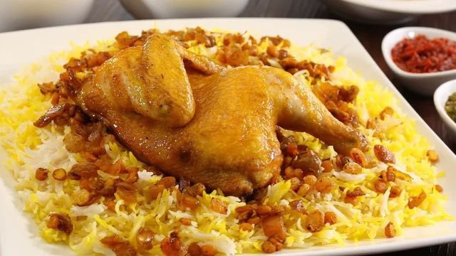

الوصفات الكويتية


مجبوس دجاج

المقادير
- دجاجه
- بصل مفروم
- فصوص ثوم مدقوق
- كوبين أرز منقوع قبلها بنصف ساعة
- فنجان زيت ذرة
- بهارات ملعقة صغيرة من فلفل اسود ، كزبرة ، كمون ، كركم ، كاري ،هيل ، زنجبيل ، 2حبة لومي أسود وملح
طريقة التحضير
- في إناء نضع الزيت ثم البصل ليحمر قليلاً ثم الثوم معه ونضع الدجاج ونقلبه جيداً إلى أن يتشرب ماءه ثم نضع التوابل ونقلبه جيداً
- نضع فوقه الماء ونتركه إلى أن ينضج الدجاج
- نضع الأرز ونضيف المزيد من الماء ويكون ارتفاع الماء عن الأرز بمقدار 2سم
- نغطي الإناء إلى أن يتشرب الماء ونتركه بعدها على نار هادئة لمدة نصف ساعة ويقدم ويزين بالمكسرات على حسب الرغبة